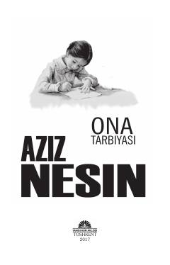

OTAziz Nesinning bolalar va kattalar uchun mo'ljallangan saralangan roman va hikoyalar to'plami.
Ushbu to'plam mashhur turk yozuvchisi Aziz Nesinning «G'aroyib bolalar» romani va bir qator hajviy hikoyalarini o'z ichiga oladi. Asarlar yoshlar dunyoqarashini shakllantirishga xizmat qiluvchi falsafiy mazmun va hayotiy voqealarga boy.